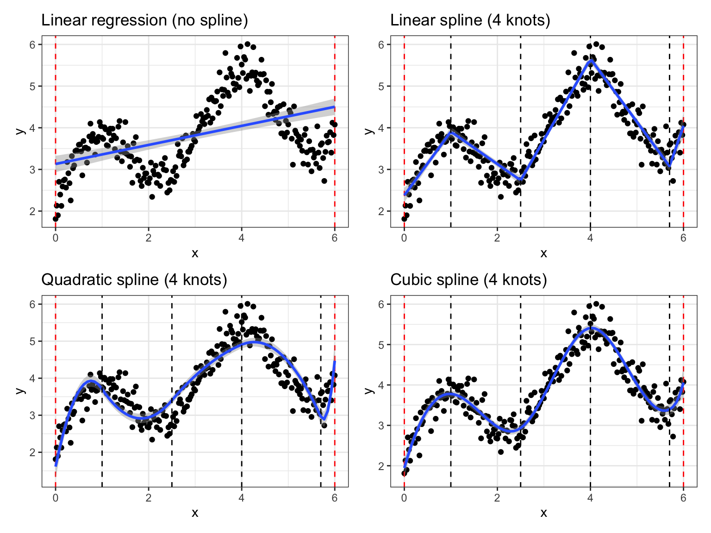
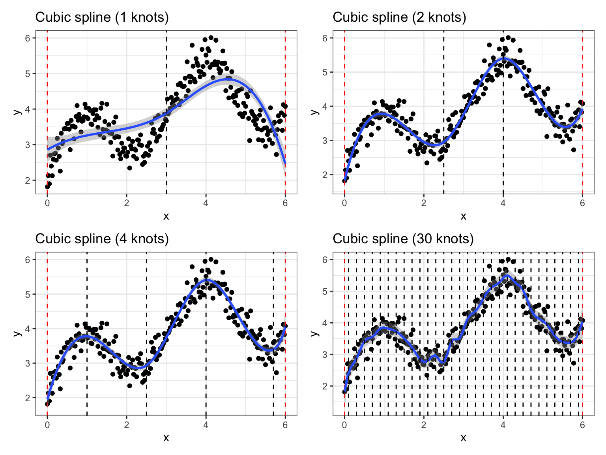

Code
# Load libraries
library(splines)
library(dplyr)
library(ggplot2)
library(patchwork)
set.seed(1)When building a regression model, several common strategies exist for analyzing continuous variables:
In research, continuous variables are often converted into categorical variables by grouping values into two (dichotomization) or more categories. The main advantage of this approach is that the results can be easily interpreted.
However, it comes with many drawbacks, notably a considerable loss of power and residual confounding (Harrell, 2022; Royston et al., 2005). In addition, this implies determining the number of categories and the cutpoints (Altman et al., 1994). These cutpoints assume a discontinuous outcome-variable relationships that appears far from realistic (Harrell, 2023).
Functional form enables to design non-linear variable-outcome relationships in a very flexible way. Numerous mathematical transformations can be used. It is recommended to rely on theoretical expertise to choose the most appropriate transformations.
We list some examples of functional form.
In polynomial regression, the continuous variable is transformed in polynomials of different degree. thus yielding to the following model: \(y = \beta_0 + \beta_1 x \beta_2 x^2 + \cdots + \beta_n x^n + \epsilon\)
Fractional polynomials are polynomials whose degrees are not natural numbers but fractional i.e. \(y = \beta_0 + \beta_1 x \beta_2 x^{p1} + \cdots + \beta_n x^{pn} + \epsilon\)
Splines are piecewise polynomials, joined at points called knots. There are many different types of splines i.e. B-spline, restricted cubic splines (natural splines), P-splines … It requires defining the degree of the polynomial, the number and the position of the knots.
# Load libraries
library(splines)
library(dplyr)
library(ggplot2)
library(patchwork)
set.seed(1)In Figure 1 below, we compare how linear regression with and without spline model some artificial data. We used splines with different degrees (1 to 3) but the same amount of knots (k = 4).
# Creating simulated data sets
data <- tibble(x = seq(from = 0, to = 6, by = .025)) %>%
mutate(y = sin(2*x) + x -.1*x^2 + 2 + rnorm(length(x), sd = .3))
# Create a common template for plots
g_template <- ggplot(data, aes(x = x, y = y)) +
geom_point() +
geom_vline(xintercept = c(0, 6), linetype = "dashed", color = "red") +
theme_bw()
# Draw plots with ggplot2 and patchwork libraries
g_template +
geom_smooth(method = lm, formula = y ~ x) +
ggtitle("Linear regression (no spline)") +
g_template +
geom_smooth(method = lm, formula = y ~ bs(x, degree = 1, knots = c(1, 2.5, 4, 5.7))) +
geom_vline(xintercept = c(1, 2.5, 4, 5.7), linetype = "dashed") +
ggtitle("Linear spline (4 knots)") +
g_template +
geom_smooth(method = lm, formula = y ~ bs(x, degree = 2, knots = c(1, 2.5, 4, 5.7))) +
geom_vline(xintercept = c(1, 2.5, 4, 5.7), linetype = "dashed") +
ggtitle("Quadratic spline (4 knots)") +
g_template +
geom_smooth(method = lm, formula = y ~ bs(x, degree = 3, knots = c(1, 2.5, 4, 5.7))) +
geom_vline(xintercept = c(1, 2.5, 4, 5.7), linetype = "dashed") +
ggtitle("Cubic spline (4 knots)")
Similarly, Figure 2 shows cubic splines (degree = 3) with increasing number of knots (k from 1 to 30).
# Draw plots with ggplot2 and patchwork libraries
g_template +
geom_smooth(method = lm, formula = y ~ bs(x, degree = 3, knots = c(3))) +
geom_vline(xintercept = c(3), linetype = "dashed") +
ggtitle("Cubic spline (1 knots)") +
g_template +
geom_smooth(method = lm, formula = y ~ bs(x, degree = 3, knots = c(2.5, 4))) +
geom_vline(xintercept = c(2.5, 4), linetype = "dashed") +
ggtitle("Cubic spline (2 knots)") +
g_template +
geom_smooth(method = lm, formula = y ~ bs(x, degree = 3, knots = c(1, 2.5, 4, 5.7))) +
geom_vline(xintercept = c(1, 2.5, 4, 5.7), linetype = "dashed") +
ggtitle("Cubic spline (4 knots)") +
g_template +
geom_smooth(method = lm, formula = y ~ bs(x, degree = 3, knots = seq(from = 0.1, to = 5.9, by = .2))) +
geom_vline(xintercept = seq(from = 0.1, to = 5.9, by = .2), linetype = "dashed") +
ggtitle("Cubic spline (30 knots)")
Examples of restricted cubic splines implementations for regression models :